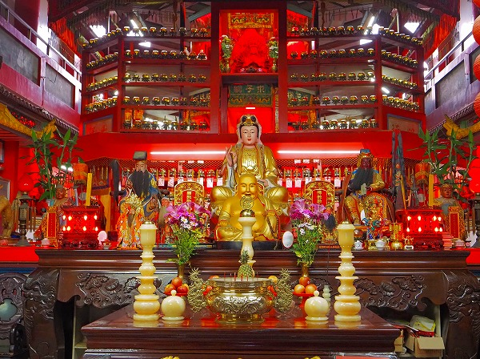

開元殿
珍寺大道場 HOME
台湾の珍奇な寺廟を巡る旅、次は台湾の英雄が巨大化している寺院に行ってみよう。
それは嘉義県北部にある開元殿だ。
水田と畑が延々と続く風景の中を車は進む。
すると突如色鮮やかな3体の巨像が目に飛び込んでくる。
呆気にとられながら境内に入る。
この開元殿は台湾の英雄、鄭成功を祀っており、中央に鎮座しているのは鄭成功その人なのである。
鄭成功とは明朝末期から清朝初期にかけて清と戦った軍人であり政治家。
最も大きな功績としては当時オランダが占領していた台湾に進攻し、オランダ人を駆逐し、台湾独自の政府を樹立したことにある。
その事により台湾独立の祖とされているのだ。
今でも鄭成功は英雄視されている。
例えば台湾には成功路という名の道が数えきれないほどあるのだが、それらは鄭成功の名を冠しているのだ。
20世紀の孫文、蒋介石と並ぶ台湾の英雄である人物だが、何と彼は日本生まれだったのだ。
鄭成功の父は長崎県平戸を根拠地とした中国人の海商で、日本人の女性を妻に娶り平戸に住んでいた。
そこで生まれたのが鄭成功、日本名田川福末である。日本で言うと江戸初期の話である。
当時、明は清に攻められ存続が危うくなっていた。
そのため鄭成功は7歳にして海を渡り、父と共に清と戦ったとされている。
やがて当時の明帝である隆武帝から国王の姓「朱」を賜った。
その事から彼は国姓爺と呼ばれるようになるのだ。
その後も清と戦い続けるも、その中で台湾に進攻し、オランダから台湾を開放する。
このニュースは日本でも話題になる。
日本生まれの人物が台湾でオランダ人をやっつけたという衝撃的な話は後に近松門左衛門の人形浄瑠璃「国性爺合戦」として上方で上演されたという。
当時やられたい放題の東アジアにおいてアジア人がヨーロッパの植民地を開放するなんてあり得ない話だったに違いない。
鄭成功はそんな離れ業をやってのけた人物、という訳なのだ。
先に訪れた鎮天宮のような二千年前の人物ならいざ知らず近世の人物がここまで祀りあげられるのは珍しいと思う。
日本で言えば徳川家康が大仏になっちゃったような感覚なのだ。いやもっと凄いか。
ともあれ開元殿に進もう。
コの字型に建つ建物の中央屋上に鎮座する鄭成功像。
高さは５３．４メートル。
周囲は見渡す限りの田畑だけにその存在感は圧倒的だ。
そしてその両翼に二体の巨像がそびえている。
それは誰なのかは後に知ることになるのだが、とにかく中に入ってみることにする。
廟内には道教の神々が祀られており、オーソドックスな道教寺院といった風情だ。
唯一気になったのが祭壇の脇の壁に奉納されていた大量の武具。
主に刀剣だったが、中にはノコギリザメの鼻先のようなモノ（いや、ホンモノかも知れない）も奉納されていた。
他にも様々な神が祀られている。

そんな中、やはりいました六十太歳。
そしてその1番バッターは…
ハイ。そうです。
「目から手」そして「手から目」でお馴染み、私が大好きな甲子太歳金辨大将軍様！
相変わらずビックリするようなお姿で世の中を見渡しております。
三階には鄭成功大神像入口とあったが、鍵がかかっていて入れなかった。
台湾の巨大神像は以前は中に入れたのだが、１９９９年の９２１大地震以降中に入れなくなってしまったところが多い。
ここもそのうちのひとつなのか。
あるいはコロナの影響なのか。
三階に上り、外のテラスに出る。
鄭成功像の直下には行けなかったが、両翼の巨像の足元には行けそうだ。
もちろん行ってみる。
まずは向かって左側に立つ萬禮大将軍像。
鄭成功の片腕として清軍と戦い、数々の武功を得た軍神だ。
立像で高さは約２５メートル。
剣を持つ姿が印象的な神像だ。
剣の長さだけで１２メートル!その姿から剣官と呼ばれていたそうな。
一方右サイドに立つのは甘輝大将軍。
これも清との戦いで活躍した将軍だ。
手にプレゼントっぽい箱を持っているが、コレは印鑑。
そして印官と呼ばれていたそうな。
実はこの3体、同時に出来たわけではない。
中央の鄭成功像の完成が１９９５年。萬禮将軍と甘輝将軍の像は２０１６年に出来上がっている。
つまり鄭成功像は２０年以上もソロで活動していたのだ。
逆にトリオ結成から７年目。キャリアとしてはソロ時代の方が長い、という事になる。
これは先に訪れた嘉義の鎮天宮の三王像もそうだが、三体並ぶことで真ん中の像がより強調されるのだ。
ここの鄭成功像も然り。
より強烈なセンター感が出ているではないか。
キリスト教の三位一体や釈迦三尊像を持ち出すまでもなく古今東西様々な場面でトリオの図像はその威力を発揮しているのだ。
改めてこの三体を眺めてみるとまるで水戸黄門と助さん格さんのようではないか。片方は印籠ならぬ印鑑持ってるし。
そういえば水戸光圀と鄭成功って同世代だしなあ、などと妙な符号の一致に何らかの意味があるかといえば…特にないですね。
最後に裏手から鄭成功像を見る。
ああ、椅子の部分に窓が付いている。かつてはあそこにまで入れたんだ。
くぅ～、入りたかったなあ。残念。
次の珍寺にGO!
台湾大佛列伝6に戻る